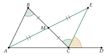
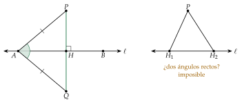
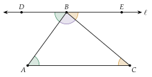
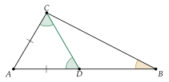
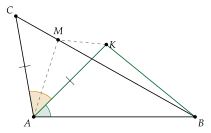

Instituto de Matemáticas
Triángulos: ángulo exterior, paralelas y desigualdades
Esta semana
- 3.3El teorema del ángulo exterior
- 3.4Rectas paralelas
- 3.5Los ángulos del triángulo
- 3.6Desigualdades en el triángulo
- 3.7Distancia de un punto a una recta
- 3.8Bisectriz y mediatriz como lugares geométricos
Al terminar la semana podremos
- Probar el teorema del ángulo exterior y usarlo.
- Probar que la suma de los ángulos de un triángulo es 180∘.
- Comparar lados y ángulos; usar la desigualdad triangular.
- Ver la bisectriz y la mediatriz como lugares geométricos.
El teorema del ángulo exterior
El teorema del ángulo exterior
§3.3 El teorema del ángulo exteriorEl siguiente teorema no usa el postulado de las paralelas; por eso es tan valioso. De él saldrán la unicidad de la perpendicular, la existencia de paralelas y los criterios L-A-A e hipotenusa-cateto.
Teorema 3.3.1 · Teorema del ángulo exterior
§3.3 El teorema del ángulo exteriorTodo ángulo exterior de un triángulo es mayor que cada uno de los ángulos interiores no adyacentes a él.
Sea △ABC y sea D un punto con A−C−D, de modo que ∠BCD es exterior en C. Probemos que m∠BCD>m∠B.
Sea M el punto medio de BC y sea E el punto del rayo opuesto a MA con ME=MA.

Teorema 3.3.1 · Teorema del ángulo exterior (continuación)
§3.3 El teorema del ángulo exterior| 1. | MB≅MC, MA≅ME | Construcción |
| 2. | ∠BMA≅∠CME | Opuestos por el vértice |
| 3. | △BMA≅△CME | L-A-L (1), (2) |
| 4. | ∠MBA≅∠MCE | Partes correspondientes |
Teorema 3.3.1 · Teorema del ángulo exterior (continuación)
§3.3 El teorema del ángulo exterior| 5. | E está en el interior de ∠BCD | E y B del mismo lado de AC; E y D del mismo lado de BC (ambos en el lado opuesto a A) |
| 6. | m∠BCD=m∠BCE+m∠ECD>m∠BCE | Postulado T3 y m∠ECD>0 |
| 7. | m∠BCD>m∠B | (4) y (6) |
Teorema 3.3.1 · Teorema del ángulo exterior (continuación)
§3.3 El teorema del ángulo exteriorPara el otro ángulo no adyacente, ∠A, se aplica lo anterior al ángulo exterior ∠ACF, con B−C−F, que es opuesto por el vértice a ∠BCD y por tanto congruente con él.
Interactivo El ángulo exterior
§3.3 El teorema del ángulo exteriorArrastre los vértices. El ángulo exterior δ siempre mide lo mismo que α + γ, y por eso es mayor que cada uno de ellos.
Corolario 3.3.2
§3.3 El teorema del ángulo exteriorLa suma de las medidas de dos ángulos cualesquiera de un triángulo es menor que 180∘. En consecuencia, todo triángulo tiene a lo sumo un ángulo recto u obtuso, y al menos dos ángulos agudos.
Si ∠C′ es el ángulo exterior en C, m∠B<m∠C′=180∘−m∠C (T4), es decir, m∠B+m∠C<180∘. Si hubiera dos ángulos de medida ≥90∘, su suma sería ≥180∘.
Teorema 3.3.3 · Perpendicular desde un punto exterior
§3.3 El teorema del ángulo exteriorPor un punto exterior a una recta pasa exactamente una recta perpendicular a ella.
Sea P∈/ℓ, y sean A, B dos puntos de ℓ.
Existencia. Construimos, en el semiplano de borde ℓ que no contiene a P, el rayo AX con ∠BAX≅∠BAP, y sobre él el punto Q con AQ=AP.
Como P y Q están en lados opuestos de ℓ, PQ corta a ℓ en un punto H.

Teorema 3.3.3 · Perpendicular desde un punto exterior (continuación)
§3.3 El teorema del ángulo exteriorSi H=A, los ángulos ∠BAP y ∠BAQ son congruentes y forman un par lineal, así que son rectos y PQ⊥ℓ.
Si H=A, los triángulos △PAH y △QAH son congruentes por L-A-L (AP≅AQ, ∠PAH≅∠QAH, AH común), así que ∠PHA≅∠QHA; como forman un par lineal, son rectos.
Unicidad. Si hubiera dos perpendiculares a ℓ por P, cortándola en H1=H2, el triángulo △PH1H2 tendría dos ángulos rectos, contra el Corolario 3.3.2.
Teorema 3.3.4 · Criterio lado-ángulo-ángulo (L-A-A)
§3.3 El teorema del ángulo exteriorSi en dos triángulos un lado, un ángulo adyacente a él y el ángulo opuesto a él son respectivamente congruentes, los triángulos son congruentes: si AB≅DE, ∠A≅∠D y ∠C≅∠F, entonces △ABC≅△DEF.
Sobre el rayo DF tomamos F′ con DF′=AC.
Por L-A-L, △ABC≅△DEF′, y por tanto ∠DF′E≅∠C≅∠F.
Si F′=F, uno de los puntos F, F′ está entre D y el otro; digamos D−F′−F (el otro caso es simétrico).
Entonces ∠DF′E es un ángulo exterior del triángulo △EF′F y, por el teorema del ángulo exterior, m∠DF′E>m∠F.
Teorema 3.3.4 · Criterio lado-ángulo-ángulo (L-A-A) (continuación)
§3.3 El teorema del ángulo exteriorEsto contradice ∠DF′E≅∠F.
Luego F′=F y △ABC≅△DEF.
Teorema 3.3.5 · Criterio hipotenusa-cateto
§3.3 El teorema del ángulo exteriorSi dos triángulos rectángulos tienen la hipotenusa y un cateto respectivamente congruentes, son congruentes.
Sean △ABC y △DEF rectángulos en C y F, con AB≅DE y AC≅DF.
Sobre el rayo opuesto a FE tomamos G con FG=CB.
Como ∠DFG es recto (forma par lineal con el recto ∠DFE), L-A-L da △DFG≅△ACB, de donde DG≅AB≅DE.
Así △DGE es isósceles y ∠G≅∠E.
Teorema 3.3.5 · Criterio hipotenusa-cateto (continuación)
§3.3 El teorema del ángulo exteriorPor L-A-A (con el lado DF común, los ángulos rectos en F y ∠G≅∠E), △DFG≅△DFE; luego FE≅FG≅CB y, por L-L-L, △ABC≅△DEF.
Rectas paralelas
Definición 3.4.1 · Transversal y los ocho ángulos
§3.4 Rectas paralelasUna transversal a dos rectas coplanares ℓ y m es una recta que las corta en dos puntos distintos. Se forman ocho ángulos que reciben estos nombres:
alternos internos: están entre ℓ y m, en lados opuestos de la transversal (∠3,∠5 y ∠4,∠6);
alternos externos: fuera de la franja, en lados opuestos (∠1,∠7 y ∠2,∠8);
correspondientes: uno interno y otro externo del mismo lado de la transversal (∠1,∠5; ∠2,∠6; ∠3,∠7; ∠4,∠8);
colaterales (o conjugados) internos: entre ℓ y m, del mismo lado (∠4,∠5 y ∠3,∠6).

Teorema 3.4.2 · Criterio de los alternos internos
§3.4 Rectas paralelasSi dos rectas cortadas por una transversal forman un par de ángulos alternos internos congruentes, entonces son paralelas.
Sean ℓ y m cortadas por t en P y Q, con un par de alternos internos congruentes.
Supongamos, por contradicción, que ℓ y m se cortan en un punto R.
Entonces P, Q y R forman un triángulo, y uno de los dos ángulos alternos internos es un ángulo exterior de △PQR mientras que el otro es un ángulo interior no adyacente a él.
Por el teorema del ángulo exterior, el primero es mayor que el segundo, lo que contradice que sean congruentes.
Interactivo Paralelas y transversal
§3.4 Rectas paralelasArrastre los puntos de corte sobre ℓ y m.
Corolario 3.4.3
§3.4 Rectas paralelasDos rectas cortadas por una transversal son paralelas si se cumple cualquiera de las condiciones siguientes: un par de ángulos correspondientes es congruente; un par de alternos externos es congruente; un par de colaterales internos es suplementario. En particular, dos rectas perpendiculares a una misma recta son paralelas.
Cada condición implica, usando ángulos opuestos por el vértice o pares lineales, que un par de alternos internos es congruente. Por ejemplo, si los correspondientes ∠1 y ∠5 son congruentes, como ∠1≅∠3 (opuestos por el vértice), se tiene ∠3≅∠5, que son alternos internos.
Rectas paralelas
§3.4 Rectas paralelasEste corolario da, sin ningún postulado nuevo, la existencia de paralelas: dada una recta ℓ y un punto P∈/ℓ, trazamos la perpendicular t de P a ℓ (Teorema 3.3.3) y luego la perpendicular m a t por P (Teorema 2.4.3). Las rectas ℓ y m son perpendiculares a t, luego paralelas. Lo que no se puede probar con los postulados que tenemos es la unicidad de esa paralela.
Postulado 3.4.4 · Postulado de las paralelas (Playfair)
§3.4 Rectas paralelasPor un punto exterior a una recta pasa a lo sumo una recta paralela a ella.
Rectas paralelas
§3.4 Rectas paralelasJunto con la existencia que acabamos de probar: por un punto exterior a una recta pasa exactamente una paralela.
Teorema 3.4.5 · Recíproco del criterio de los alternos internos
§3.4 Rectas paralelasSi dos rectas paralelas son cortadas por una transversal, los ángulos alternos internos son congruentes. En consecuencia, los correspondientes y los alternos externos son congruentes y los colaterales internos son suplementarios.
Sean ℓ∥m cortadas por t en P∈ℓ y Q∈m. Por el postulado T2 existe una recta ℓ′ por P que forma con t un ángulo alterno interno congruente al que forma m. Por el Teorema 3.4.2, ℓ′∥m. Por el postulado de Playfair, ℓ′=ℓ. Luego los alternos internos que forma ℓ son congruentes. Las demás afirmaciones se deducen como en el Corolario 3.4.3.
Corolario 3.4.6
§3.4 Rectas paralelasSi una recta es perpendicular a una de dos paralelas, es perpendicular a la otra.
Dos rectas paralelas a una tercera son paralelas entre sí (transitividad).
(i) Si ℓ∥m y t⊥ℓ, la recta t corta a m (si no, por el punto de t∩ℓ pasarían dos paralelas a m). Los alternos internos son congruentes, así que t forma un ángulo recto con m. (ii) Si ℓ∥n, m∥n y ℓ, m se cortaran en un punto P, por P pasarían dos paralelas a n. Luego ℓ∥m.
Rectas paralelas
§3.4 Rectas paralelasCon esto queda resuelto el ejercicio 10 del capítulo 0: el paralelismo (con la convención de que toda recta es paralela a sí misma) es una relación de equivalencia en el plano.
Los ángulos del triángulo
Teorema 3.5.1 · Suma de los ángulos interiores
§3.5 Los ángulos del triánguloLa suma de las medidas de los ángulos interiores de un triángulo es 180∘.
Sea △ABC y sea ℓ la paralela a AC por B. Tomamos D y E en ℓ, en lados opuestos de B, con D del mismo lado de BC que A.
Por el recíproco del criterio de los alternos internos, ∠DBA≅∠A y ∠EBC≅∠C.

Teorema 3.5.1 · Suma de los ángulos interiores (continuación)
§3.5 Los ángulos del triánguloAdemás ∠DBA, ∠ABC y ∠CBE “completan” el ángulo llano en B: el ángulo ∠DBC forma un par lineal con ∠CBE, y A está en el interior de ∠DBC.
Por T3 y T4, m∠A+m∠B+m∠C=m∠DBA+m∠ABC+m∠CBE=m∠DBC+m∠CBE=180∘.
Interactivo La suma de los ángulos de un triángulo
§3.5 Los ángulos del triánguloArrastre los vértices A, B y C. La paralela a AB por C forma ángulos alternos internos iguales a α y β.
Corolario 3.5.2
§3.5 Los ángulos del triángulo(Ángulo exterior.) La medida de un ángulo exterior de un triángulo es igual a la suma de las medidas de los dos ángulos interiores no adyacentes.
Los ángulos agudos de un triángulo rectángulo son complementarios.
Cada ángulo de un triángulo equilátero mide 60∘.
Si dos ángulos de un triángulo son congruentes con dos ángulos de otro, los terceros también lo son.
(i) El ángulo exterior en C mide 180∘−m∠C=m∠A+m∠B. Las demás son cuentas inmediatas.
Observación
§3.5 Los ángulos del triánguloEl numeral (iv) permite, en los criterios A-L-A y L-A-A, “mover” el ángulo: con el postulado de las paralelas, cualquier lado y dos ángulos cualesquiera respectivamente congruentes bastan para la congruencia. Sin embargo, la demostración de L-A-A que dimos antes no usa las paralelas, y vale también en las geometrías no euclidianas.
Ejemplo 3.5.3
§3.5 Los ángulos del triánguloEn el triángulo △ABC, m∠A=2x+10, m∠B=3x−5 y el ángulo exterior en C mide 5x+10. Halle los ángulos.
Solución
Por el corolario, 5x+10=(2x+10)+(3x−5), es decir, 5x+10=5x+5, que es imposible. Los datos son inconsistentes: no existe tal triángulo. (Si el exterior midiera 4x+20, tendríamos 4x+20=5x+5, x=15, y los ángulos serían 40∘, 40∘ y 100∘.)
Desigualdades en el triángulo
Teorema 3.6.1 · Al mayor lado se opone el mayor ángulo
§3.6 Desigualdades en el triánguloSi en un triángulo dos lados no son congruentes, los ángulos opuestos a ellos tampoco lo son, y al lado mayor se opone el ángulo mayor: si AB>AC, entonces m∠C>m∠B.
Como AC<AB, existe D en AB, entre A y B, con AD=AC. El triángulo △ADC es isósceles, luego ∠ADC≅∠ACD. Como D está en el interior de ∠ACB, m∠C>m∠ACD=m∠ADC. Y ∠ADC es un ángulo exterior del triángulo △DBC, así que m∠ADC>m∠B. Juntando, m∠C>m∠B.

Corolario 3.6.2 · Al mayor ángulo se opone el mayor lado
§3.6 Desigualdades en el triánguloSi m∠C>m∠B, entonces AB>AC. En particular, en un triángulo rectángulo la hipotenusa es el lado mayor.
Por tricotomía, AB=AC, AB<AC o AB>AC. Si AB=AC, el triángulo sería isósceles y ∠B≅∠C. Si AB<AC, el teorema daría m∠B>m∠C. Ambas posibilidades contradicen la hipótesis; queda AB>AC.
Teorema 3.6.3 · Desigualdad triangular
§3.6 Desigualdades en el triánguloEn todo triángulo, la longitud de cada lado es menor que la suma de las longitudes de los otros dos: AB+BC>AC.
Sea D el punto del rayo opuesto a BA con BD=BC. Entonces AD=AB+BD=AB+BC, y △BCD es isósceles, así que ∠BDC≅∠BCD. Como B está en el interior de ∠ACD, m∠ACD>m∠BCD=m∠ADC. En el triángulo △ACD, al ángulo mayor se opone el lado mayor: AD>AC, es decir, AB+BC>AC.
Interactivo ¿Se puede construir el triángulo?
§3.6 Desigualdades en el triánguloCambie las tres longitudes y vea cuándo se cierra el triángulo.
Interactivo Lados y ángulos opuestos
§3.6 Desigualdades en el triánguloArrastre los vértices. Los colores emparejan cada ángulo con el lado opuesto: el mayor ángulo (rojo) siempre está frente al mayor lado.
Corolario 3.6.4
§3.6 Desigualdades en el triángulo∣AB−BC∣<AC<AB+BC. Tres números positivos a,b,c son las longitudes de los lados de un triángulo solo si cada uno es menor que la suma de los otros dos.
Teorema 3.6.5 · Teorema de la bisagra
§3.6 Desigualdades en el triánguloSi dos triángulos tienen dos lados respectivamente congruentes y los ángulos comprendidos son distintos, al ángulo mayor se opone el lado mayor: si AB≅DE, AC≅DF y m∠A>m∠D, entonces BC>EF.
Construimos, en el semiplano de borde AB que contiene a C, el rayo AX con ∠BAX≅∠D, y sobre él el punto K con AK=DF.

Teorema 3.6.5 · Teorema de la bisagra (continuación)
§3.6 Desigualdades en el triánguloPor L-A-L, △ABK≅△DEF, así que BK=EF.
Como m∠BAK<m∠BAC, el punto K está en el interior de ∠BAC.
Sea AM la bisectriz de ∠KAC, con M en BC (barra transversal).
Los triángulos △AKM y △ACM son congruentes por L-A-L (AK=AC, AM común, ángulos en A congruentes), luego KM=CM.
Teorema 3.6.5 · Teorema de la bisagra (continuación)
§3.6 Desigualdades en el triánguloPor la desigualdad triangular en △BKM, EF=BK<BM+MK=BM+MC=BC.
Corolario 3.6.6 · Recíproco de la bisagra
§3.6 Desigualdades en el triánguloSi AB≅DE, AC≅DF y BC>EF, entonces m∠A>m∠D.
Si fuera ∠A≅∠D, por L-A-L BC=EF; si fuera m∠A<m∠D, por la bisagra BC<EF. Ambas cosas contradicen la hipótesis.
Distancia de un punto a una recta
Teorema 3.7.1 · Teorema de las oblicuas
§3.7 Distancia de un punto a una rectaSea P∈/ℓ y sea H el pie de la perpendicular de P a ℓ. Para todo punto Q∈ℓ distinto de H:
PQ>PH (el segmento perpendicular es el más corto);
si Q,R∈ℓ, entonces PQ=PR si y solo si HQ=HR, y PQ>PR si y solo si HQ>HR (de dos oblicuas, es mayor la que se aleja más del pie).
(i) En el triángulo △PHQ el ángulo en H es recto, luego es el mayor y PQ, la hipotenusa, es el lado mayor (Corolario 3.6.2).
(ii) Si HQ=HR, los triángulos rectángulos △PHQ y △PHR son congruentes por L-A-L y PQ=PR; el recíproco sale del criterio hipotenusa-cateto.
Teorema 3.7.1 · Teorema de las oblicuas (continuación)
§3.7 Distancia de un punto a una rectaPara la desigualdad, si HQ>HR con Q y R del mismo lado de H, entonces H−R−Q; el ángulo ∠PRQ es exterior al triángulo △PHR y por tanto obtuso, de modo que en △PRQ el lado mayor es PQ.
Si están en lados opuestos, se reemplaza R por su simétrico respecto a H.
El recíproco se obtiene por tricotomía.
Definición 3.7.2 · Distancia de un punto a una recta
§3.7 Distancia de un punto a una rectaLa distancia de un punto P a una recta ℓ es d(P,ℓ)=PH, donde H es el pie de la perpendicular de P a ℓ; si P∈ℓ, d(P,ℓ)=0. Por el teorema anterior es la menor de las distancias de P a los puntos de ℓ.
Teorema 3.7.3 · Distancia entre paralelas
§3.7 Distancia de un punto a una rectaSi ℓ∥m, todos los puntos de ℓ están a la misma distancia de m. Ese número es la distancia entre las paralelas.
Sean P,Q∈ℓ y H,K los pies de sus perpendiculares sobre m. Por el Corolario 3.4.6, PH y QK son también perpendiculares a ℓ. En los triángulos △PHK y △KQP: PK es común; ∠HKP≅∠QPK (alternos internos entre las paralelas ℓ y m con transversal PK) y ∠PHK≅∠KQP (ambos rectos). Por L-A-A, △PHK≅△KQP, y PH=KQ.
Bisectriz y mediatriz como lugares geométricos
Bisectriz y mediatriz como lugares geométricos
§3.8 Bisectriz y mediatriz como lugares geométricosUn lugar geométrico es el conjunto de todos los puntos que cumplen una propiedad. Probar que una figura es cierto lugar geométrico exige probar dos inclusiones: que todo punto de la figura cumple la propiedad, y que todo punto que cumple la propiedad está en la figura.
Teorema 3.8.1 · Caracterización de la mediatriz
§3.8 Bisectriz y mediatriz como lugares geométricosEn un plano, la mediatriz de un segmento AB es el conjunto de los puntos que equidistan de A y de B: P∈mediatriz de AB ⟺ PA=PB.
Sea M el punto medio de AB y m la mediatriz.
(⇒) Sea P∈m.
Si P=M, es claro.
Si no, los triángulos △PMA y △PMB tienen PM común, ángulos rectos en M y MA≅MB; por L-A-L son congruentes y PA=PB.
Teorema 3.8.1 · Caracterización de la mediatriz (continuación)
§3.8 Bisectriz y mediatriz como lugares geométricos(⇐) Sea PA=PB.
Si P∈AB, entonces P=M (por la unicidad del punto medio, ya que P no puede estar fuera de AB: estaría más cerca de uno de los extremos).
Si P∈/AB, el triángulo △PAB es isósceles y por el Teorema 3.2.7 la mediana PM es perpendicular a AB; así PM=m y P∈m.
Teorema 3.8.2 · Caracterización de la bisectriz
§3.8 Bisectriz y mediatriz como lugares geométricosUn punto P del interior de un ángulo ∠ABC está en la bisectriz si y solo si equidista de los lados del ángulo: d(P,BA)=d(P,BC).
Sean E y F los pies de las perpendiculares desde P a BA y BC. (⇒) Si ∠PBE≅∠PBF, los triángulos rectángulos △PBE y △PBF tienen la hipotenusa BP común y son congruentes por L-A-A; luego PE=PF. (⇐) Si PE=PF, los mismos triángulos son congruentes por hipotenusa-cateto, y ∠PBE≅∠PBF.

Bisectriz y mediatriz como lugares geométricos
§3.8 Bisectriz y mediatriz como lugares geométricosEstos dos teoremas tendrán consecuencias importantes en el capítulo 7: las tres mediatrices de un triángulo se cortan en un punto (el circuncentro) y las tres bisectrices también (el incentro).
Ordena la demostración
Capítulo 3Encuentra el error
Capítulo 3Ojo, parcero: errores que veo en los parciales
Capítulo 3- LLA es criterio de congruencia → no lo es (salvo hipotenusa–cateto)
- AAA ⇒ congruentes → AAA solo da semejanza
Lo que nos llevamos de la semana 4
- Un ángulo exterior es mayor que cada interior no adyacente.
- Alternos internos congruentes ⇒ rectas paralelas (y, con el postulado de las paralelas, al revés).
- Los ángulos de un triángulo suman 180∘.
- A mayor lado se opone mayor ángulo; a<b+c.
Quiz de la semana 4
Fin de la semana 4
Próxima semana: Polígonos y paralelogramos